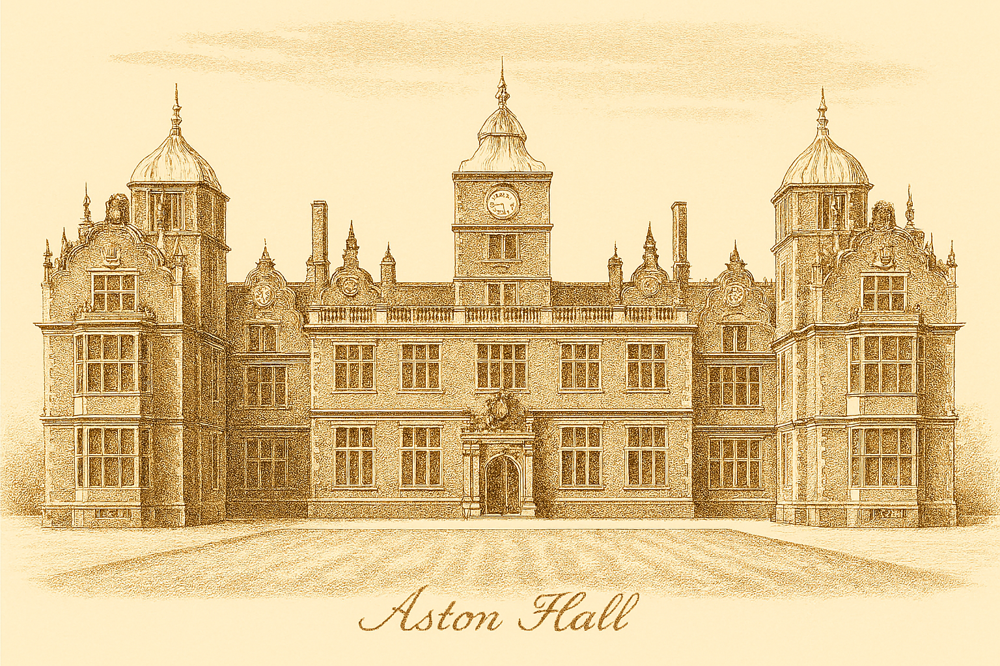

Aston Hall

Aston Hall is one of the finest surviving examples of early 17th‑century Jacobean architecture, built between 1618 and 1635 for Sir Thomas Holte. The mansion is constructed primarily of warm red brick with stone dressings, arranged in a symmetrical E‑shaped plan that was fashionable among elite houses of the period. Its long central range is flanked by projecting wings, creating a formal and imposing façade that emphasises balance, hierarchy, and status.
The building rises three storeys above a basement, with tall mullioned and transomed windows that flood the interior with light. Decorative gables, finials, and elaborate chimney stacks punctuate the roofline, giving the house its distinctive silhouette. The central entrance is framed by an ornate stone porch and leads into a sequence of grand rooms designed for display, hospitality, and ceremonial use.
Inside, Aston Hall retains many original Jacobean features, including richly carved oak panelling, plasterwork ceilings, and an impressive great staircase that ascends through the heart of the house. The Long Gallery, stretching the full length of the upper floor, is one of the architectural highlights — a space used historically for exercise, entertainment, and the display of family portraits.
The hall was designed as both a residence and a statement of power. Its layout reflects the social order of the time: grand state rooms occupy the principal floors, while service areas, kitchens, and working spaces are positioned in the rear ranges and basement. The surrounding grounds once formed an extensive estate, with formal gardens, orchards, and parkland extending toward what is now the site of Aston Villa’s stadium.
Today, Aston Hall stands as a Grade I listed building, admired for its architectural integrity and the survival of so many original features. Its structure offers a rare and vivid insight into the ambitions, tastes, and daily life of the Jacobean gentry.